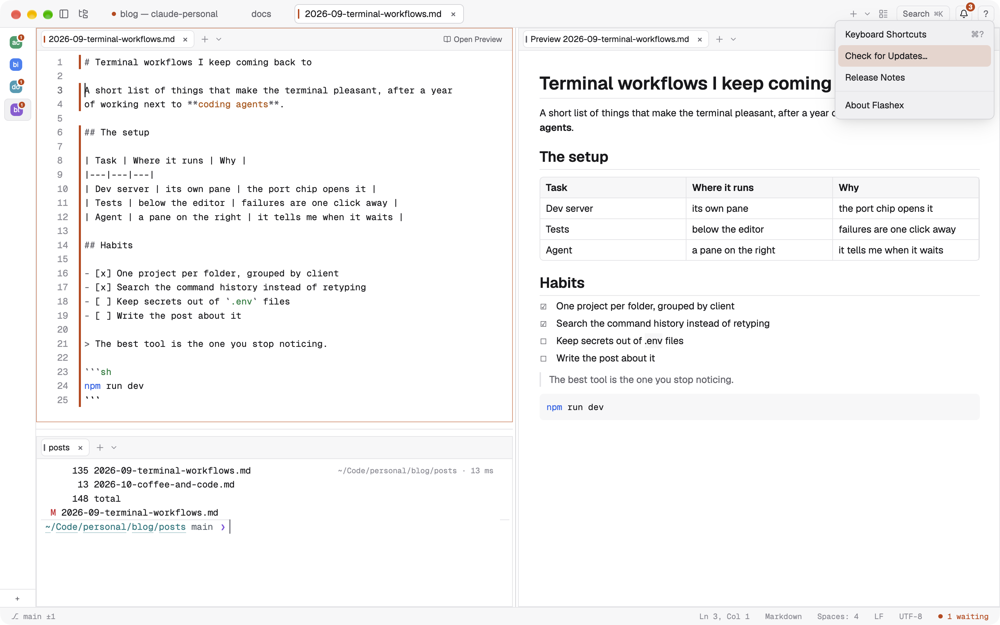

Install
Flashex runs on Macs with Apple Silicon (M1 or later) and macOS 13 Ventura or later, on Windows 10 (version 1809) and 11 (x86_64 and ARM64), and on Linux (beta). Intel Macs are not supported.
Homebrew (recommended)
❯ brew install --cask palo-kunovsky-flash/flashex/flashexThe cask installs Flashex.app into /Applications, links the flashex command, and removes the quarantine flag after Homebrew has checked the download's SHA-256, so the app opens normally the first time.
Download the dmg
- Download
Flashex-macOS-arm64.dmg. It is always the latest version; each release also has a versionedFlashex-<version>.dmgwith its.sha256. - Optionally check it.
- Open it and drag Flashex to Applications.
- The first time, see the next section.
Opening it the first time
Right-click (or Control-click) Flashex in Applications and choose Open, then Open again in the dialog. Or run:
❯ xattr -dr com.apple.quarantine /Applications/Flashex.appWhy this step? Flashex is free and made by one developer without a paid Apple Developer account. It is signed, but not with an Apple Developer ID, and it is not notarized by Apple. macOS Gatekeeper therefore refuses a downloaded copy until you confirm once that you want to run it. After that it opens like any other app, and updates installed by Flashex itself do not ask again. Homebrew does this step for you.
The flashex command
Inside a Flashex terminal the flashex command is always available. Homebrew links it for use everywhere; after a dmg install, link it into your PATH yourself:
❯ ln -s /Applications/Flashex.app/Contents/MacOS/flashex /opt/homebrew/bin/flashexUpdates
Flashex checks for a new release at start and then once a day, by asking GitHub for the latest release. When one is available, a card offers Release Notes, Update and Later. Nothing is downloaded or installed until you choose Update, and the restart waits for Restart Now. Your terminals keep running through the update.
To look right away, choose Check for Updates… in the ? menu at the top right (also in the Flashex menu and the command palette). The same menu has the release notes and the version.

Every update is verified before it replaces anything:
- The release manifest (
flashex-update.json) is signed with the project's own ECDSA P-256 key. Its public half is built into the app. The signature covers the version, the size and the SHA-256 of the dmg. - The download must have exactly that size and SHA-256.
- The new app's version and code signature are checked before it is swapped in. If the new version cannot be launched, or quits or crashes within a minute of starting, the previous one is put back.
Turn the check off in Settings › Updates or with [updates] check = false. If Flashex is in a folder it cannot write to, it offers the verified dmg in Finder instead. With Homebrew, brew upgrade --cask flashex works too; the cask is marked auto_updates, so Homebrew leaves updating to the app unless you pass --greedy.
Check a download yourself
Each release lists the dmg's SHA-256 and ships Flashex-<version>.dmg.sha256 next to it:
❯ shasum -a 256 -c Flashex-<version>.dmg.sha256
# or compare by eye:
❯ shasum -a 256 Flashex-<version>.dmgWindows
- Download
Flashex-<version>-windows-<arch>-setup.exefrom the latest release:x86_64for most PCs,aarch64for ARM laptops (Snapdragon). - Run it. It installs for you only, without an administrator, into
%LOCALAPPDATA%\Programs\Flashex; adds Flashex to the Start menu and New Flashex Tab Here / Open in Flashex to Explorer's menu on folders; and lists it in Installed apps with its uninstaller. - The first time, Windows SmartScreen may say "Windows protected your PC": choose More info, then Run anyway. The setup is not signed with a paid certificate yet; updates do not ask again.
The window's minimize, maximize and close are at the top right, as in Windows 11 (Snap Layouts when you point at maximize); the gear next to ? opens Settings, and ? › About Flashex shows the version.
Terminals run PowerShell 7 when it is installed, else Windows PowerShell; Git Bash and cmd work too. The browser panel uses WebView2, which comes with Windows 11 and every updated Windows 10. Shortcuts use Ctrl where the Mac uses Cmd, and Ctrl+Shift with a letter for Flashex's own (new tab Ctrl+Shift+T, the palette Ctrl+Shift+P), so Ctrl with a letter stays the shell's. Updates download the verified setup, install it quietly and start Flashex again; your terminals keep running through it. To uninstall, use Installed apps (Settings › Apps).
Linux (beta)
x86_64 or arm64 with glibc 2.35 or later (Ubuntu 22.04, Debian 12, Fedora 36 and newer), X11 or Wayland. Download from the latest release:
- AppImage (updates itself):
chmod +x Flashex-<version>-linux-<arch>.AppImage, then run it. It needs FUSE (fuse3/fusermount3); without it, run it with--appimage-extract-and-run. - Debian / Ubuntu:
sudo apt install ./flashex_<version>_<arch>.deb. When a new version is out, Flashex downloads the verified package and shows the same command. - tar.gz: extract it anywhere and run
flashex-app.
Each file has a .sha256 next to it, and updates are verified with the same signature as on macOS. Shortcuts are as on Windows (Ctrl for Cmd). Known gaps of the beta: there is no built-in browser panel yet (links open in your browser), and no menu bar: every command is in the command palette (the Search button at the top right).
Uninstall
Quit Flashex and end the terminals it keeps (flashex keeper stop), then move Flashex.app to the Trash (or brew uninstall --cask flashex). Your settings are in ~/.config/flashex, app data in ~/Library/Application Support/flashex, caches in ~/Library/Caches/flashex and logs in ~/Library/Logs/flashex; delete them too if you want nothing left. If you installed the Claude Code hooks, remove Flashex's entries from Claude Code's settings.json (a backup from before the install is next to it as settings.json.flashex-backup.orig).